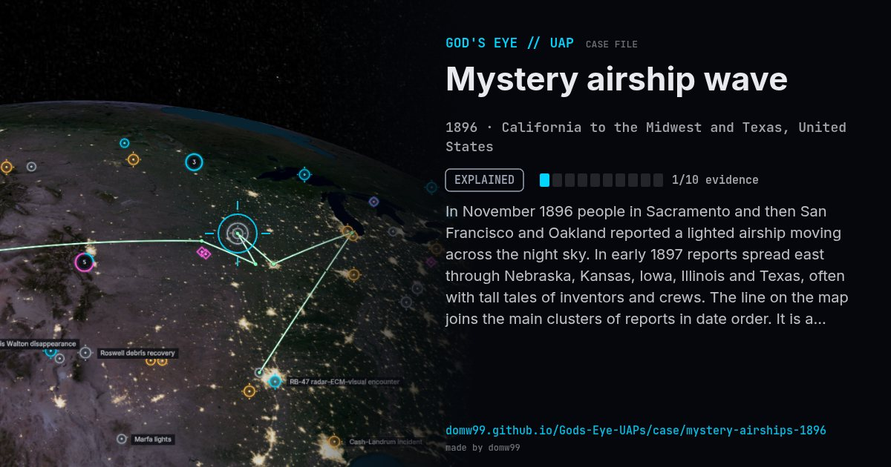

Mystery airship wave
EXPLAINED

In November 1896 people in Sacramento and then San Francisco and Oakland reported a lighted airship moving across the night sky. In early 1897 reports spread east through Nebraska, Kansas, Iowa, Illinois and Texas, often with tall tales of inventors and crews. The line on the map joins the main clusters of reports in date order. It is a wave of sightings, not one object.
Explanation
No powered airship capable of such flights existed. Reports are attributed to newspaper hoaxes (some papers invented stories outright), bright planets such as Venus, hot-air "fire balloons" and pranks.
What was seen
Shape: Cigar-shaped "airship" with lights and wings or propellers
Witnesses: Thousands, over five months
Duration: November 1896 – April 1897
Browse
- United States
- Before 1900
- Explained
- Historical accounts
- Many independent witnesses
- Lights and fireballs
- Cylinders and cigar shapes